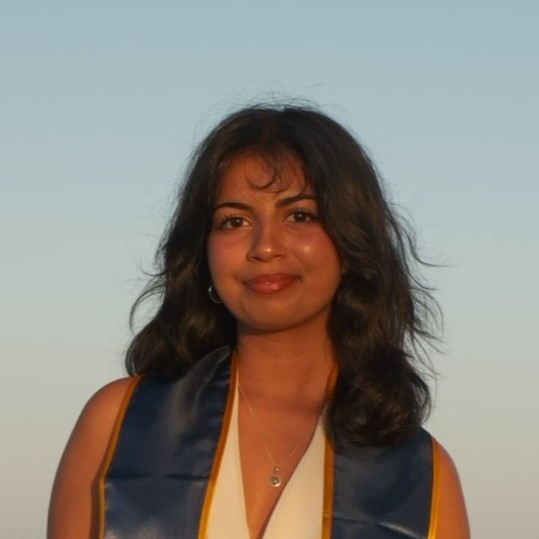

I am a data scientist, researcher, and multimedia artist from San Diego, California. I recently completed my Bachelor of Science in Statistics and Data Science with a minor in Art at the University of California, Santa Barbara. My work is centered around building data-driven systems that operate across computational, physical, and experiential domains.
Some of my interests include web design, crafting, and music production.
You can reach me at taneeshapanda@gmail.com

education
work
Data Science Intern
Pinnacle Consulting LLC, Columbia, SC, USA
Undergraduate Research Assistant
Four Eyes Lab, UCSB, Santa Barbara, CA, USA
Web Developer
SB Creative Lab, UCSB, Santa Barbara, CA, USA
Undergraduate Research Assistant
Speech, Prosody, and Articulatory Kinematics Lab, UCSB, Santa Barbara, CA, USA
research
ACM SCF '26
Yu, S., Ancho, B.F., Panda, T., and Jacobs, J. Machine In The Stack: CNC Machine Motion Programming at Execution Time. ACM Symposium on Computational Fabrication (SCF) 2026, Tokyo, Japan.
UCSB Data Science Capstone Showcase
Presented work sponsored by Singularity Solutions.
→ view posterexhibitions
Morph: Narratives in Transformation
Virtual exhibition that features my work "Go Fish", curated by Shaw Yiran Xiao.
→ view piece